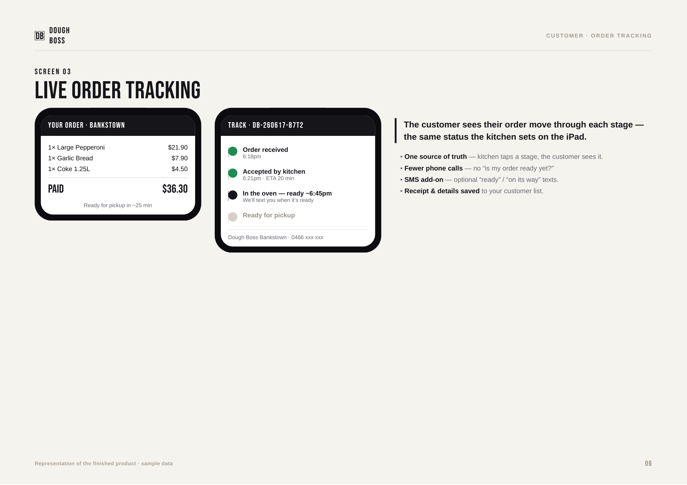
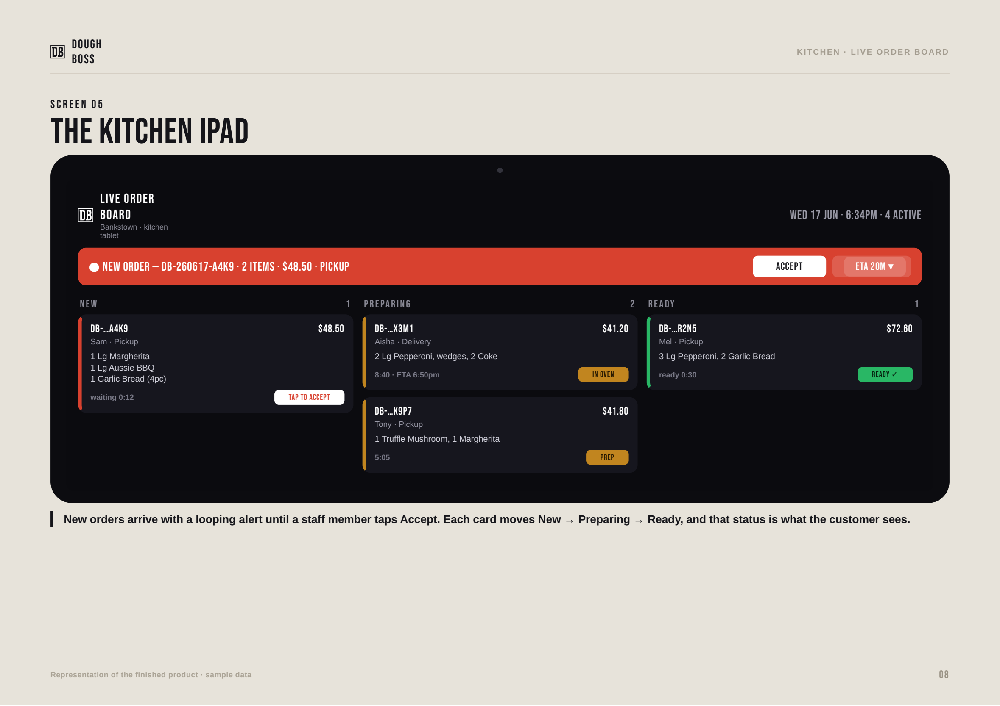
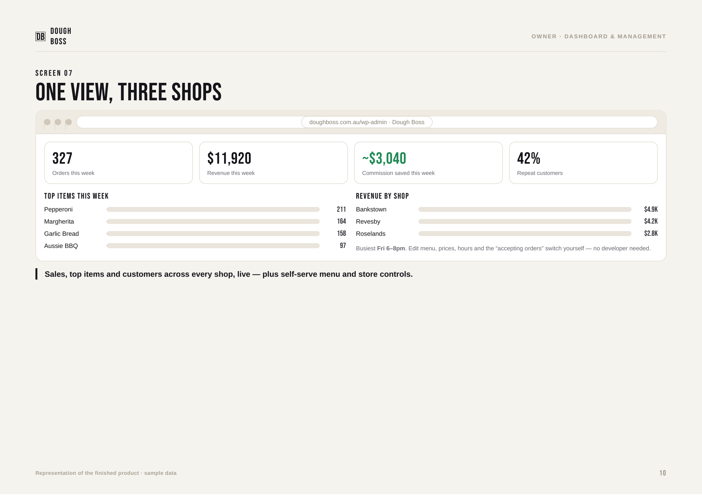

The decision
Use email and tracking together.
Immediate
Confirmation email as soon as the durable order is created. It lists the order number, items, total and tracking instructions.
Useful updates
When enabled: accepted with the kitchen ETA, then ready for pickup/table/delivery. Avoid emailing every small internal kitchen step.
Self-service
The customer can check status at any time with their order number and the exact email used at checkout.
One source of truth
Customer to kitchen, end to end.
Revesby pickup
cart + payment
+ confirmation
and chooses ETA
then Ready
and email update
The kitchen status is the customer status. Staff should update the board when the real work changes—not early, and not after the fact.
Customer experience
What customers receive.
| Moment | Customer sees | Who triggers it |
|---|---|---|
| Automatic Order received | Order number, items, total and tracking instructions. | The checkout creates the durable order. |
| Staff action Accepted | When enabled, confirmation that the kitchen has started, plus ETA when selected. | Kitchen taps Accept and selects the ETA. |
| Staff action Ready | When enabled, pickup, table-service or delivery handoff wording. | Kitchen moves the order to Ready. |
| Any time Track My Order | Received, preparing, ready and completed stages, timing and total. | Customer enters order number plus matching email. |

Illustration uses sample data and an older multi-shop concept. Current online ordering rollout is Revesby only.
Management setup: Track My Order page
[doughboss_order_tracking].Kitchen staff
Five actions during service.

Illustration uses sample data. The production Revesby board uses the same lifecycle and protected WordPress staff access.
If two tablets disagree
The older action is rejected instead of overwriting the newer state. Refresh the board, read the current status, then act once.
Do not edit the order in KDS
The kitchen board is for status and timing. Confirm material item changes with management and preserve the audit trail.
If the board says Offline
Stop changing cards from stale data. Use Retry once, then open DoughBoss → Orders to reconcile. Log the order number, time, contact, total and payment status. Never recreate or recharge a paid order.
Cancellation or refund
A manager decides. Cancel the order state only after checking production progress; refund only with payment-provider evidence, then record the reason and confirm the final customer status.
Owner and management
Daily controls that matter.
Opening
- Confirm Revesby is the only online-order location.
- Check menu prices and sold-out items.
- Open the kitchen board and test sound.
- Confirm ordering and the selected payment provider are intentionally on or off.
During service
- Watch aging orders and delayed ETAs.
- Review cancellations/refunds.
- Check ambiguous POSPal items before any retry.
- Keep Bankstown and Roselands visit-or-call only for this rollout.
Customer messages
- Settings → Real-time & Notifications: deliberately choose accepted and ready email toggles.
- Message Templates: confirmation, accepted and ready wording.
- Send a real test to Gmail and Outlook before launch.
Closing
- Clear or explain every active order.
- Reconcile paid orders, cancellations and refunds.
- Review POSPal outbox exceptions.
- Record any issue before staff sign out.

Illustration contains sample figures, not live sales. Current online-order data should originate from Revesby only.
Quick fixes
What to do when something looks wrong.
| Problem | Do this first | Do not do |
|---|---|---|
| Customer says no confirmation email | Confirm the exact checkout email, check spam, then check the WordPress mail log/provider delivery event using the order number. | Do not ask them to place and pay again until the original order is checked. |
| Tracking says no matching order | Use the exact order number and exact email used at checkout. Check for spelling or a different family email. | Do not reveal whether another customer’s order number exists. |
| Order is missing from KDS or board says Offline | Do not change stale cards. Retry once, then check DoughBoss → Orders and the Revesby filter. Log the order number, time, contact, total and payment status. | Do not recreate or recharge a paid order. |
| POSPal is offline or ambiguous | Keep producing from the DoughBoss order. Review the POSPal outbox and verify the till before a manual release. | Never repeatedly resend an ambiguous order. |
| Customer ordered after hours | Treat it as an unpaid Revesby preorder request. Call and confirm timing before promoting it. | Do not promise acceptance or payment until staff confirms it. |
| Wrong status was tapped | Use the available undo/recall immediately or ask a manager to correct the lifecycle. | Do not leave a customer-facing Ready state if the food is not ready. |
Acceptance checklist
Before the first live Revesby order.
Customer
- Track My Order page is published and configured.
- Revesby location, pickup mode and
ordering_openare deliberately verified. - Confirmation email arrives with correct items and total.
- Accepted/ready notification toggles are deliberately on or off.
- When enabled, accepted email shows the chosen ETA.
- When enabled, ready email has the correct pickup wording.
- Wrong email cannot open the order.
- Mobile tracking page is readable.
Staff and management
- Kitchen users have restricted KDS accounts.
- New-order sound works on the Revesby tablet.
- Two-tablet stale update is safely rejected.
- Cancellation and refund procedure is understood.
- Gateway/payment mode is deliberately verified before ordering opens.
- Tyro sandbox and webhook checks pass before live keys.
- POSPal offline test leaves the order on KDS.
ordering_open, location, hours, payment mode, notification toggles and real mail delivery. Bankstown and Roselands remain visit-or-call until their own acceptance checks are completed.